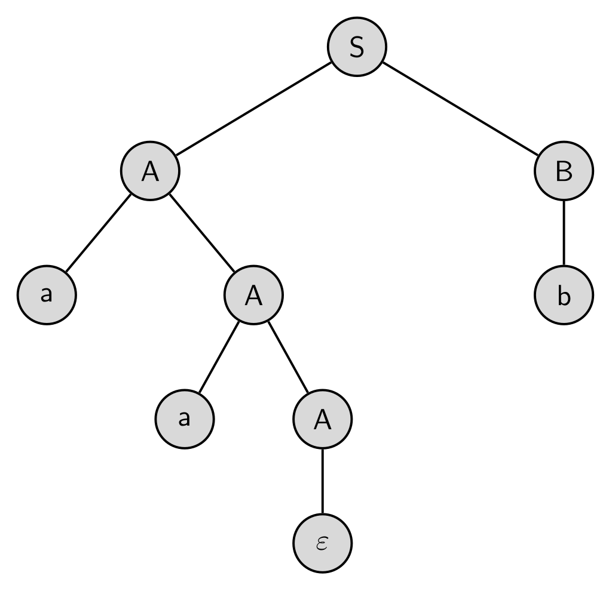
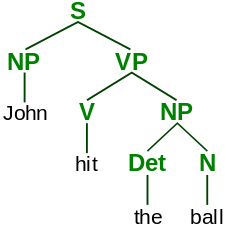
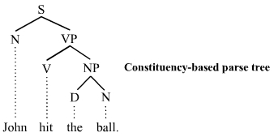
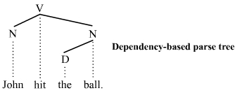

A parse tree or parsing tree[1] or derivation tree or concrete syntax tree is an ordered, rooted tree that represents the syntactic structure of a string according to some context-free grammar. The term parse tree itself is used primarily in computational linguistics; in theoretical syntax, the term syntax tree is more common.
Concrete syntax trees reflect the syntax of the input language, making them distinct from the abstract syntax trees used in computer programming. Unlike Reed-Kellogg sentence diagrams used for teaching grammar, parse trees do not use distinct symbol shapes for different types of constituents.
Parse trees are usually constructed based on either the constituency relation of constituency grammars (phrase structure grammars) or the dependency relation of dependency grammars. Parse trees may be generated for sentences in natural languages (see natural language processing), as well as during processing of computer languages, such as programming languages.
A related concept is that of phrase marker or P-marker, as used in transformational generative grammar. A phrase marker is a linguistic expression marked as to its phrase structure. This may be presented in the form of a tree, or as a bracketed expression. Phrase markers are generated by applying phrase structure rules, and themselves are subject to further transformational rules.[2] A set of possible parse trees for a syntactically ambiguous sentence is called a "parse forest."[3]
A parse tree is made up of nodes and branches.[4] In the picture the parse tree is the entire structure, starting from S and ending in each of the leaf nodes (John, ball, the, hit). In a parse tree, each node is either a root node, a branch node, or a leaf node. In the above example, S is a root node, NP and VP are branch nodes, while John, ball, the, and hit are all leaf nodes.
Nodes can also be referred to as parent nodes and child nodes. A parent node is one which has at least one other node linked by a branch under it. In the example, S is a parent of both NP and VP. A child node is one which has at least one node directly above it to which it is linked by a branch of the tree. Again from our example, hit is a child node of V. A nonterminal function is a function (node) which is either a root or a branch in that tree whereas a terminal function is a function (node) in a parse tree which is a leaf.
The constituency-based parse trees of constituency grammars (phrase structure grammars) distinguish between terminal and non-terminal nodes. The interior nodes are labeled by non-terminal categories of the grammar, while the leaf nodes are labeled by terminal categories. The image below represents a constituency-based parse tree; it shows the syntactic structure of the English sentence John hit the ball:
The parse tree is the entire structure, starting from S and ending in each of the leaf nodes (John, hit, the, ball). The following abbreviations are used in the tree:
Each node in the tree is either a root node, a branch node, or a leaf node.[5] A root node is a node that doesn't have any branches on top of it. Within a sentence, there is only ever one root node. A branch node is a parent node that connects to two or more child nodes. A leaf node, however, is a terminal node that does not dominate other nodes in the tree. S is the root node, NP and VP are branch nodes, and John (N), hit (V), the (D), and ball (N) are all leaf nodes. The leaves are the lexical tokens of the sentence.[6][page needed] A parent node is one that has at least one other node linked by a branch under it. In the example, S is a parent of both N and VP. A child node is one that has at least one node directly above it to which it is linked by a branch of a tree. From the example, hit is a child node of V. The terms mother and daughter are also sometimes used for this relationship.
The dependency-based parse trees of dependency grammars[7] see all nodes as terminal, which means they do not acknowledge the distinction between terminal and non-terminal categories. They are simpler on average than constituency-based parse trees because they contain fewer nodes. The dependency-based parse tree for the example sentence above is as follows:
This parse tree lacks the phrasal categories (S, VP, and NP) seen in the constituency-based counterpart above. Like the constituency-based tree, constituent structure is acknowledged. Any complete sub-tree of the tree is a constituent. Thus this dependency-based parse tree acknowledges the subject noun John and the object noun phrase the ball as constituents just like the constituency-based parse tree does. The constituency vs. dependency distinction is far-reaching. Whether the additional syntactic structure associated with constituency-based parse trees is necessary or beneficial is a matter of debate.